2014/5/11 恒例！ E34 伊勢湾マリーナオフ
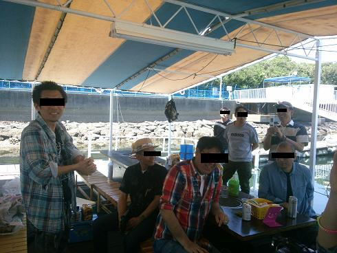 アルタァさんによる開会式 今年も各方面より様々な食材が持ち込まれているようだ！ BBQ会場はリニューアルされ、去年よりも綺麗になっていた。 |
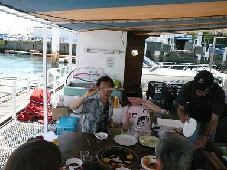 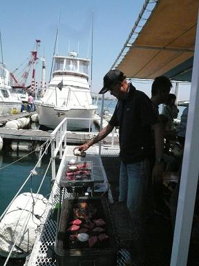 開会の挨拶も済ませ、ＢＢＱの始まりです！ 同乗で参加皆様は、朝の10時からビールにワインと飲みたい放題（笑 バベラーけろよんさんに今年は‘炭職人’ボーベンさんも加わって、炭コンロはいい感じに＾＾ |
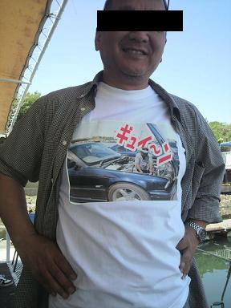 今年の牛ちゃんの小ネタ(笑 Ｔシャツにプリントしたそうだ。 量産の予定はありませんm(__)m |
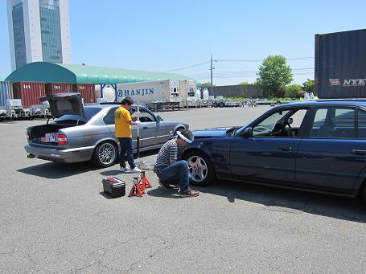 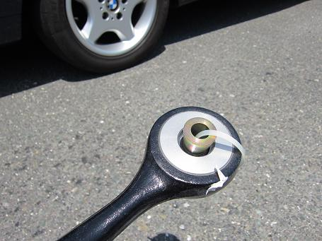 アームの交換なんて昼飯前？！ ＢＢＱもそこそこにメンテにかかるお二人！
やっぱりＥ３４な集まりはこうでないと^^! ボーベン号の足回り交換のようだ。 |
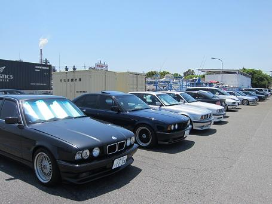 TINAさんとボーベンさんが足回りを交換しているうちに、皆さんの愛車紹介にいこう！ |
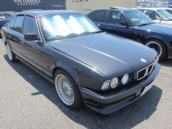 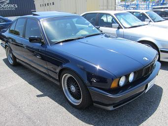 ＮＥＷせっきー号 Ｍゴロー号 525から540へ部品を移植！ RD仕様 ハイカム入って絶好調！ |
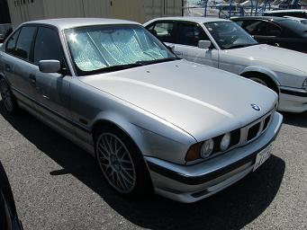 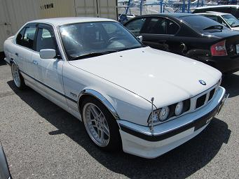 けろよん号 ジョニー号 ホイールリペアが済み19インチ復活！ フェンダーモールが光るぜ！ バブル仕様！ |
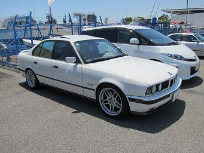 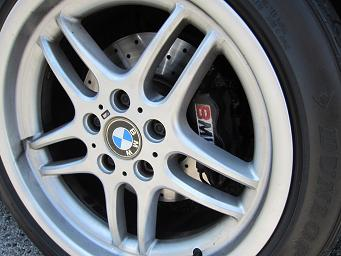 chacha２号 おっ！タケ号に4POTキャリパーが！ と思ったものの、良く見るとchacha２号でした（笑 ややこしい！ |
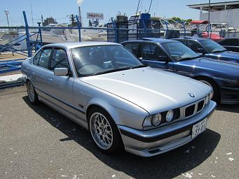 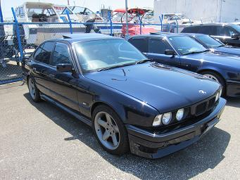 Ｒ１００ＲＳ号 牛ちゃん号 いつ見ても高速を走ってきたとは思えない綺麗さ！ 合法的に（？）フロント周りを再塗装！ ホイールも前回より色が濃くなっているような？ |
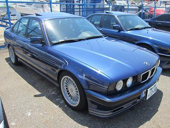 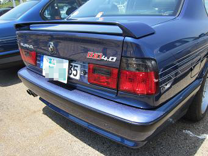 ブァンプＤ号 535からB10 4.0にお乗り換え！ 怒涛のトルクで乗りやすいそうだ。 ＪＢＬの超高級オーディオ復活を楽しみにしています＾＾ |
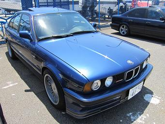 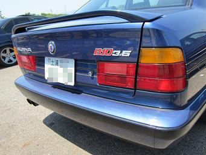 Ｋさん号 なんと茨城県からご参加のB10/3.5 きっちりメンテされている車は、不思議と立ち姿がシャキッとして見える。 このＢ１０もそんな雰囲気が感じ取れる１台＾＾ |
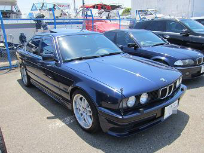 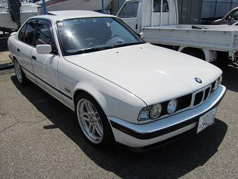 アルタァ号 タケ号 見る度に艶が増している気がする（笑 これが本物のタケ号！ 見分けるポイントはクリアウインカー！ |
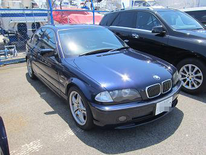 アクアマリン号 Ｅ３６からの乗換え！今回は無難な紺色だ。 しかし・・・ アクアマリンさんといえば、あの色のイメージだ！ 全塗装も近いか？！（笑 |
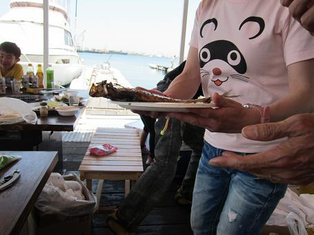 ＢＢＱ会場へ戻るとまだまだＢＢＱの真っ最中！ あ！ポンちゃんのＴシャツがタヌキ柄になってる！ こんな |
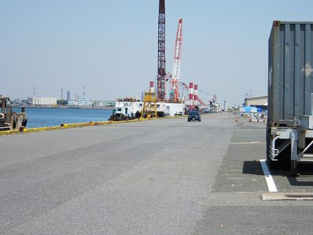 またまた駐車場でウダウダ！ 試乗してみたり・・・ |
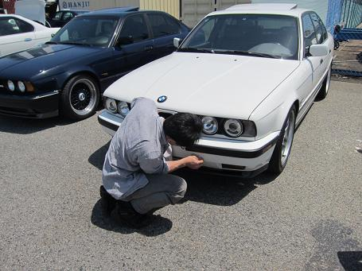 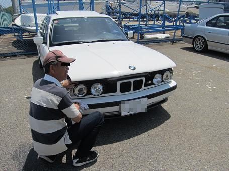 似た２台に乗るお二人はコンパウンドで掃除中＾＾ |
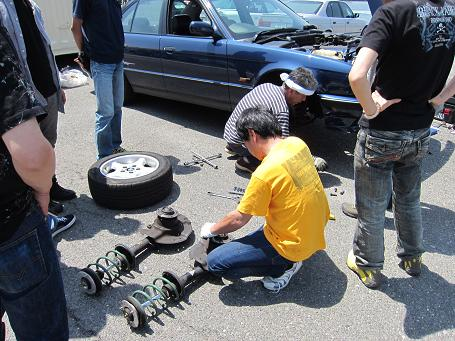 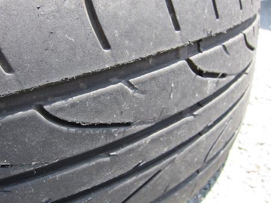 こっちでは足回りの続き！ 外れているボーベン号のタイヤを見てみると・・・ タイヤが溶けてる・・・ 一般道でどんな走りをしたらこうなるんだ（爆 |
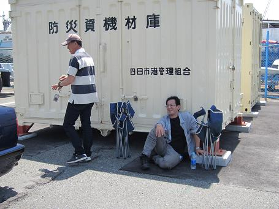 この日は風があるものの、日差しがきつくてとても暑かった！ Ｅ３４な集まりは、気取らず適当にウダウダする感じが好きだ＾＾ |
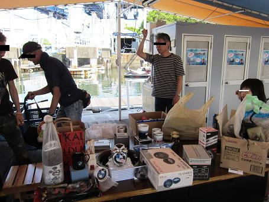 メンテも一段落したところで、じゃんけん大会！ 景品が多くて１回では終わらず（笑 と、その時！ 事件が！ ポチャン！ あ！！ |
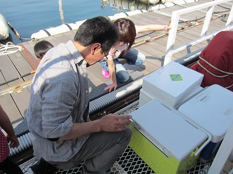 胸ポケットに入れていたChaChaさんのケータイが・・・ マリーナに沈む・・・ 凍りつくＢＢＱ会場（汗 救出しようとしたものの、深さが５ｍ近くあるとのことで断念・・・ 「電話して生きてるか確かめたろ（笑」 「アカン留守電や死んどるわ！」 「諦めや！」 なんて、いじられつつも最後には「車の鍵じゃなくて良かったね」と優しく励ますＥ３４軍団であった（笑 |
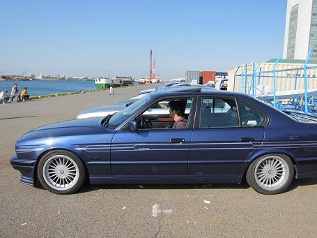 茨城のＫさん、富山のＲ１００ＲＳさん ブァンプＤさんは一足先に帰路へ。。 またお会いしましょう＾＾ |
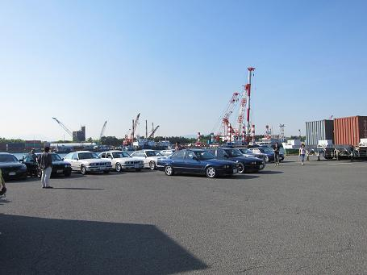 その後、整列して記念写真撮影＾＾ そういえば、今年はボンネット上げが無かった。 今年も幹事のアルタァさんはじめ、準備にかかわった皆様にお世話になりました。 最近になってどんどんＥ３４が消えていく中、今も維持し続けているオーナーは本物だと思う。 この集まりを大切にしたい。 Ｅ３４にお乗りのご覧の皆様、来年は是非m(__)m 写真の一部はタケさんより提供していただきました。 参加車両 E34 B10 4.0 1台 B10 3.5 1台 540i 1台 535i 2台 530i 3台 525i 4台 525改 1台 E46 1台 E60 1台 合計 15台 |